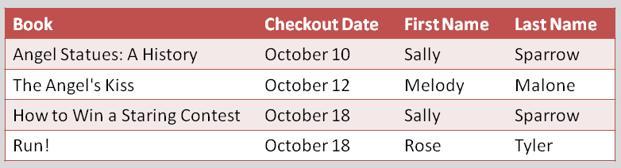
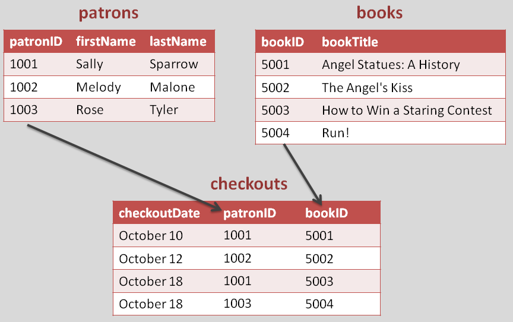

SQL
Class 1
What is SQL?
Structured Query Language
- SQL is a programming language
- Used by almost any company you can think of to store/retrieve data
- SQL provides a powerful interface to write/read data into a database
A database is a way to store information...
...and link it together
Data are stored in linked tables
Instead of one giant, repetitive table...
...you break things into smaller tables
Why?
- Thoroughness
- Consistency
- Avoiding human error
- Working with dynamic content
What is MySQL?
- A flavor of SQL
- A relational database
- A series of rows of information separated into tables
- Query-driven
MySQL data types
- VARCHAR - String up to 256 characters
- INT - Integer of up to 11 characters
- FLOAT - Decimal of any size
- TEXT - Large amounts of text, no limit in size
- DATE / TIME - date entries with specific formats
Working with MySQL
Most relational databases, including MySQL, use a language called SQL (Structured Query Language). Here are some basic commands:
- SELECT - get data from a database table
- UPDATE - change data in a database table
- DELETE - remove data from a database table
- INSERT INTO - insert new data in a database tab
Walkthrough
We will import a small database to use for the rest of the SQL section
Let's import it
Let's import our first database. Start up Cloud9
Download the database files here: https://someurl.com/file
Start MySQL
some command to start MySQL
Start the MySQL command line interface (CLI)
some command to start the CLI
Select your database
USE c9; Create a table called "product"
CREATE TABLE product (
productID int,
company varchar(255),
type varchar(255),
roast varchar(255),
description text
);You did it!

Resources
- SQL Zoo, a great guide to SQL.
- W3Schools SQL Tutorial, another guide to basic SQL.